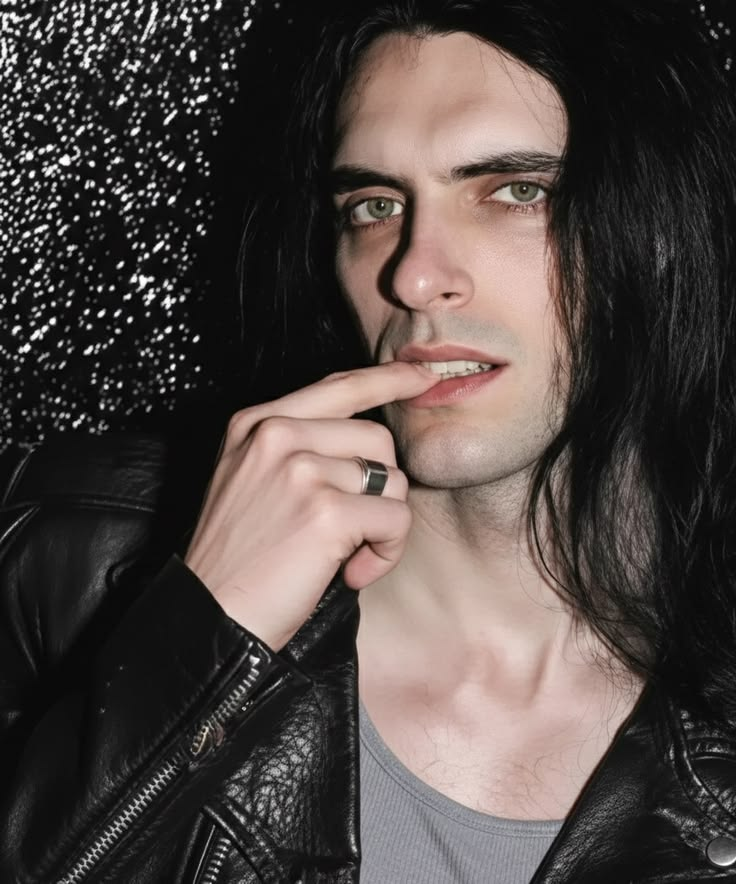
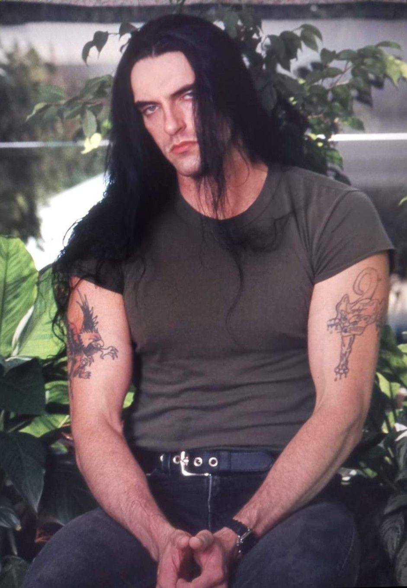

Peter O MAIS LINDO HOMEM que já pisou na terra.
Como é possível um homem ser tão lindo????
Cientistas estudam sobre isso.

Como é possível um homem ser tão lindo????
Cientistas estudam sobre isso.

A subcultura gótica continua impressionando com sua diversidade musical, desde o Metal até mesmo ao New Wave